Project Indigo
Experimental iOS computational photography app and research platform for ML-based multi-frame fusion, color correction, super-resolution, and related imaging applications, serving as a testbed for on-device model deployment.
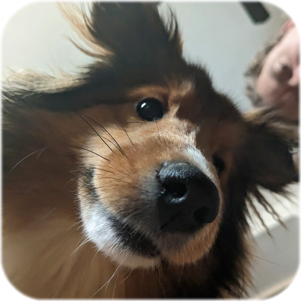
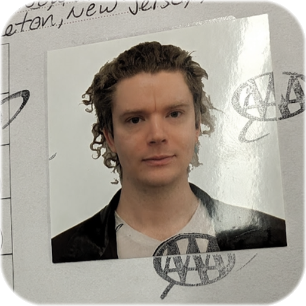
About: I'm a Research Scientist based in Seattle, working with the Adobe Nextcam team on computational photography. I received my Ph.D. from Princeton University, where I was part of the Princeton Computational Imaging Lab advised by Professor Felix Heide, and was supported by the NSF Graduate Research Fellowship. I earned my bachelor's degree in electrical engineering and computer science from UC Berkeley.
Contact: cout
<< "contact" << "@" << "ilyac.info"
Research: I'm interested in computational photography, 3D reconstruction, and inverse problems that look at the whole imaging pipeline, from signal collection to scene reconstruction. MRIs, modulated light sources, or mobile phones; I love working with real devices and real data.
Over the course of my research I've developed several open-source apps for data collection:
"If you try and take a cat apart to see how it works, the first thing you have on your hands is a non-working cat."
- Douglas Adams
Experimental iOS computational photography app and research platform for ML-based multi-frame fusion, color correction, super-resolution, and related imaging applications, serving as a testbed for on-device model deployment.
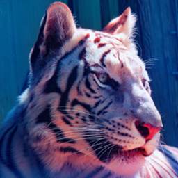
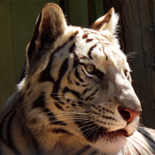
Lightweight network which transfers the color look of a reference photo in real time, conditioned on a histogram embedding of the target.
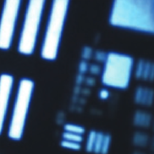
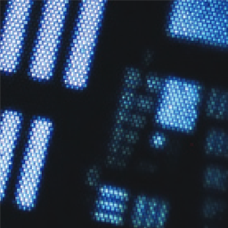
Test-time training method which reconstructs fiber bundle endoscope images by jointly estimating motion and scene, with no calibration or paired data.
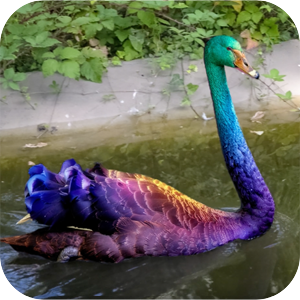
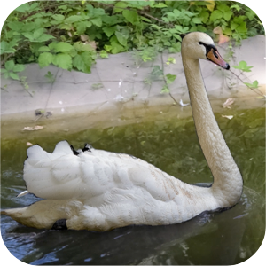
2.5D scene representation which models video as moving planes in 3D with learned atlases, supporting appearance edits and depth re-ordering.
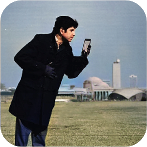
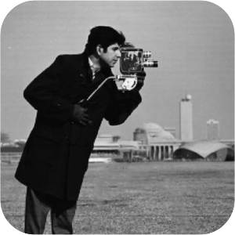
Spherical light field model which stitches panoramas while handling parallax, view-dependent shading, and scene motion at real-time 1080p.
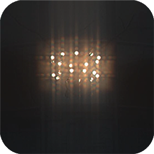
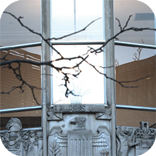
Camera design which codes half the aperture with a diffractive element, capturing coded and conventional images at once for HDR, spectral, or depth imaging.
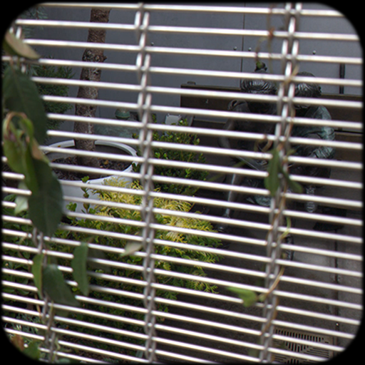
Motion representation which models burst pixel trajectories as splines, enabling image fusion from photometric loss alone and separation of reflections and shadows.
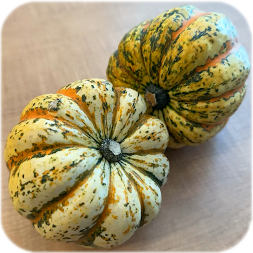
Unsupervised method which recovers depth and camera motion from the hand tremor parallax in a two-second RAW burst, without LiDAR or pose estimates.
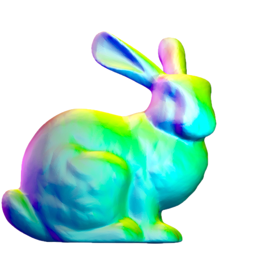
Two-stage meta-learning approach which learns generic shape priors, allowing signed distance function reconstruction of over a hundred unseen object classes.
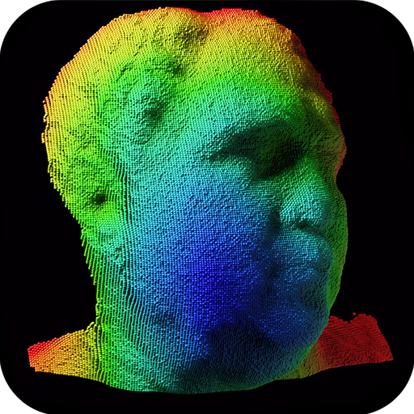
The first free-space GHz time-of-flight imager, built with electro-optic modulators and paired with a network for unwrapping ambiguous phase.
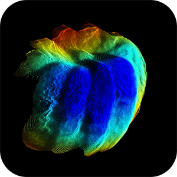
Refinement method which combines phone RGB frames, ARKit poses, and coarse depth to produce a high-fidelity depth map from a single snapshot.
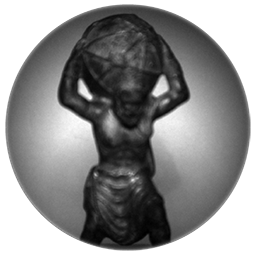
Jointly learned microlens mask and decoding network which suppresses flying-pixel artifacts in time-of-flight depth while remaining light efficient.


Education study arguing that self-contained notebook labs match in-person signal processing sections while reducing course staff overhead.


Reconstruction method which exploits Z-spectrum sparsity for 4-fold accelerated cardiac CEST scans with accurate Lorentzian line-fit analysis.


Gesture recognition approach which fuses dual depth sensor point clouds via a 3D spatial transformer network, outperforming explicit ICP registration.